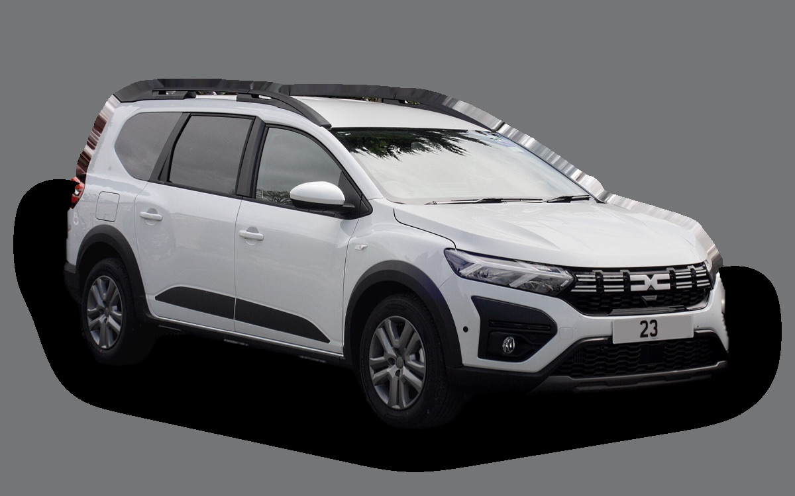

Vad kostar en Dacia Jogger per månad?
En Dacia Jogger från 2023 kostar cirka 3 210 kr i månaden, allt inräknat.


Månadskostnad per årsmodell
| Årsmodell | Version i beräkningen | Pris | Per månad | Betyg |
|---|---|---|---|---|
| 2026 | TCe 110 manuell, Extreme, 5 säten | 270 000 kr | 4 484 kr | E |
| 2023 | TCe 110 manuell, Expression, 5 säten | 171 000 kr | 3 210 kr | D |
Räknat på 5 års ägande och 1 250 mil per år, med bränslepriser från 2026-10-22. Månadskostnaden innehåller värdeminskning, drivmedel, service och reparationer, försäkring och fordonsskatt.
Så fördelas kostnaden för en 2023:a
- Värdeminskning: 1 090 kr/mån
- Drivmedel: 1 250 kr/mån
- Service och reparationer: 430 kr/mån
- Försäkring: 368 kr/mån
- Fordonsskatt: 73 kr/mån
Leasa eller köpa ny?
Dacia Privatleasing erbjuder Jogger Extreme TCe 110, 7 säten från 2 990 kr i månaden i 36 månader och 1 000 mil per år. Så mycket kostar det jämfört med att köpa samma bil ny för 280 000 kr och sälja den efter 36 månader, räknat på 1 250 mil per år och 5 procents ränta.
Leasa är billigast 669 kr mindre per månad, 24 084 kr på 36 månader.
| Per månad | Leasa | Köpa |
|---|---|---|
| Leasingavgift, 1 250 mil per år | 3 081 kr | – |
| Uppläggnings- och aviavgift | 87 kr | – |
| Värdeminskning | – | 2 589 kr |
| Ränta på pengarna, 5 % | – | 972 kr |
| Service och reparationer | ingår | 275 kr |
| Drivmedel | 1 250 kr | 1 250 kr |
| Försäkring | 479 kr | 479 kr |
| Fordonsskatt | 581 kr | 581 kr |
| Totalt per månad | 5 477 kr | 6 146 kr |
| Totalt på 36 månader | 197 172 kr | 221 256 kr |
Du kör 250 mil mer per år än erbjudandet räknar med. Uppskattat pris för fler mil: 91 kr i månaden. Dacia Privatleasing: Jogger Extreme TCe 110, 7 säten, 36 månader, 1 000 mil per år, service ingår, rörlig avgift som följer räntan. Uppläggningsavgift 995 kr och aviavgift 59 kr i månaden. Källa: dacia.se, avläst 26 oktober 2026, gäller till och med 4 januari 2027.
Köpa: 280 000 kr för en ny bil i samma version, och 186 798 kr tillbaka när du säljer den efter 3 år. Restvärdet bygger på annonspriserna för 3 år gamla bilar, justerat för att du kör 3 750 mil på 3 år i stället för typiska 4 200 mil. Räntan är vad pengarna kostar: ränta på ett billån, eller räntan du går miste om på sparade pengar. Drivmedel, försäkring och skatt är desamma. Övermil och onormalt slitage betalas när leasingbilen lämnas tillbaka, och byter du in en köpt bil hos en handlare får du oftast mindre än annonspriset.
Räkna med din egen körsträcka och ränta · Alla leasingbilar jämförda
Begagnatpriser i annonser
| Årsmodell | Medianpris | Annonser | Typiskt miltal |
|---|---|---|---|
| 2026 | 249 000 kr | 5 | 600 mil |
| 2025 | 271 900 kr | 11 | 300 mil |
| 2024 | 209 400 kr | 6 | 4 500 mil |
| 2023 | 169 600 kr | 5 | 4 200 mil |
| 2022 | 162 400 kr | 4 | 5 000 mil |
Medianpriset i svenska annonser per årsmodell i oktober 2026 (källa: Blocket, AutoUncle, BilKoll). Annonspriser är utgångspriser, och slutpriset kan bli lägre.
Motorer och versioner
| Motor | Drivmedel | Effekt | 0–100 km/h | Förbrukning (WLTP) | Räckvidd | Årsmodeller | Pristillägg |
|---|---|---|---|---|---|---|---|
| TCe 110 manuell | Bensin | 110 hk | 11,2 s | 5,8 l/100 km | – | från 2022 | – |
| Hybrid 140 | Hybrid | 140 hk | 10,1 s | 4,9 l/100 km | – | från 2023 | +69 800 kr |
- Utrustning: Expression, Extreme (+12 000 kr)
- Säten: 5 säten, 7 säten (+10 000 kr)
Fakta
- Kaross
- Kombi
- Årsmodeller
- sedan 2022
- Nypris från
- 270 000 kr
- Bagage
- 708 liter
- Euro NCAP
- 1 av 5 stjärnor
- Nybilsgaranti
- 3 år
- Driftsäkerhet
- 3,5 av 5
- Helförsäkring, uppskattning
- 5 800 kr/år
- Service, uppskattning
- 3 200 kr/år
Vanliga fel att ha koll på
- Rost på bromsledningar och underrede, reparation cirka 7 000 kr
Felen gäller vissa motorer och årsmodeller. I kalkylatorn räknas risken för just den version du väljer.
Fördelar och nackdelar
Fördel
Sju säten till ett mycket lågt pris.
Nackdel
Bara en stjärna i Euro NCAP.
Liknande bilar
 Volvo V503 173 kr/mån som 2009:a
Volvo V503 173 kr/mån som 2009:a Toyota Corolla Touring Sports3 169 kr/mån som 2023:a
Toyota Corolla Touring Sports3 169 kr/mån som 2023:a Hyundai i30 Kombi3 104 kr/mån som 2022:a
Hyundai i30 Kombi3 104 kr/mån som 2022:a Skoda Octavia Kombi III3 072 kr/mån som 2017:a
Skoda Octavia Kombi III3 072 kr/mån som 2017:a Ford Mondeo Kombi3 059 kr/mån som 2019:a
Ford Mondeo Kombi3 059 kr/mån som 2019:a- Bild saknasToyota Avensis Touring Sports3 050 kr/mån som 2015:a
Uppdaterad 2026-10-27 · annonsdata okt 2026